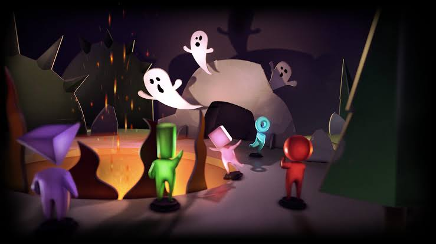
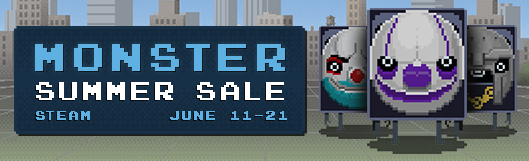

Durante el evento Steam Summer Adventure 2014, los jugadores se dividieron en 5 equipos: Azul, Verde, Rosa, Púrpura y Rojo. Estos equipos compitieron entre sí con los puntos obtenidos al crear insignias. Las insignias estándar del conjunto Steam Summer Adventure 2014 valían 10 puntos, las insignias de aluminio Summer Adventure 2014 valían 100 puntos, las insignias normales de cualquier otro conjunto 1 punto y las insignias de aluminio de cualquier otro conjunto 10 puntos. Cada día, 30 personas del equipo con más puntos que contribuyeron ese día ganarían 3 juegos de su lista de deseos de Steam. A partir del sexto día, 20 personas del equipo que quedó en segundo lugar ganaron 2 partidos y 10 personas del equipo que quedó en tercer lugar 1 partido.

Era un juego tipo clicker clicker en HTML5 donde los usuarios colaboraban en equipos para derrotar oleadas de enemigos, jefes y unidades generadoras repartidas en tres carriles Permitía desbloquear ofertas especiales («Monster Deals»), ganar cartas de intercambio de las rebajas y alcanzar hitos comunitarios Durante el evento, los jugadores se organizaron de forma masiva en foros oficiales y grupos de Steam (como el Grupo de Discusión en Steam) para coordinar ataques, compartir scripts o extensiones (que a menudo causaban problemas de rendimiento o bloqueos en navegadores como Chrome) y comentar las estrategias por niveles
